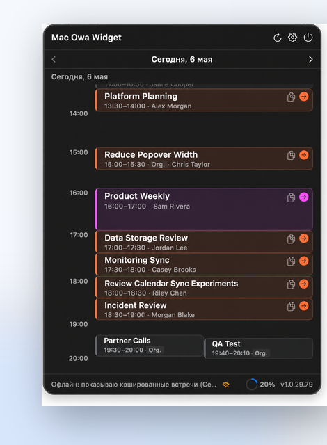

Ближайшие встречи из Microsoft Exchange / OWA прямо в строке меню macOS. Подключайтесь к Teams, Zoom, Webex и Google Meet в один клик.
Upcoming meetings from Microsoft Exchange / OWA right in your macOS menu bar. Join Teams, Zoom, Webex and Google Meet in a single click.
Требуется macOS 13 Ventura или новее · Apple Silicon и Intel
Requires macOS 13 Ventura or later · Apple Silicon & Intel

Компактно, быстро и без лишнего — там, где вы и так смотрите время.
Compact, fast and out of the way — right where you already check the time.
Ближайшие события компактным списком прямо из строки меню — без переключения окон.
Upcoming events in a compact list right from the menu bar — no window switching.
День как наглядная сетка времени, включая пересекающиеся и параллельные встречи.
The day as a clear time grid, including overlapping and parallel meetings.
Находит ссылку на звонок в поле встречи, локации и описании и распознаёт платформу.
Finds the call link in the meeting field, location and body, and recognises the platform.
Локальные напоминания до начала встречи, чтобы не пропустить старт звонка.
Local reminders before a meeting starts so you never miss the call.
Подключайте несколько Exchange / OWA аккаунтов и видите все встречи вместе.
Connect several Exchange / OWA accounts and see all meetings together.
Пароли хранятся только в macOS Keychain. Обновления — внутри приложения через Sparkle.
Passwords are stored only in macOS Keychain. Updates ship in-app via Sparkle.
Скачайте архив из последнего релиза и выполните четыре шага.
Download the archive from the latest release and follow four steps.
Откройте последний релиз и скачайте .zip для macOS.
Open the latest release and download the macOS .zip.
Распакуйте архив и перенесите OWAWidget.app в /Applications.
Extract the archive and move OWAWidget.app to /Applications.
Один раз при первой установке, если macOS блокирует запуск:
Once on first install, if macOS blocks the launch:
xattr -dr com.apple.quarantine /Applications/OWAWidget.appOWA Widget появится в строке меню — иконки в Dock нет.
OWA Widget appears in the menu bar — there is no Dock icon.
open /Applications/OWAWidget.appИспользуйте тот же адрес, по которому открываете корпоративную почту в браузере (например https://mail.company.com). Если сомневаетесь — спросите IT-отдел.
Use the same address you open corporate webmail with in your browser (e.g. https://mail.company.com). Ask your IT department if you are not sure.
Если Exchange / OWA доступен только из корпоративной сети — да. Приложение должно видеть тот же сервер, что и браузер.
If Exchange / OWA is only reachable from the corporate network, yes. The app must be able to reach the same server as your browser.
Пароль хранится в macOS Keychain. Он не сохраняется в открытом виде в файлах настроек или репозитория.
The password is stored in macOS Keychain. It is never kept as plain text in settings or repository files.
Приложение распространяется без Apple Developer ID подписи, поэтому Gatekeeper помечает первый скачанный bundle как quarantined. Снимите атрибут один раз командой из шага 3.
The app is distributed without an Apple Developer ID signature, so Gatekeeper marks the first downloaded bundle as quarantined. Remove the attribute once with the command in step 3.
Кнопка появляется, когда приложение находит ссылку на звонок. Проверьте, что организатор добавил её в описание, локацию или поле онлайн-встречи.
The button appears when the app finds a call link. Make sure the organizer added it to the body, location or online meeting field.
Бесплатно, с открытым кодом и автоматическими обновлениями.
Free, open source and self-updating.
↓ Скачать OWA WidgetDownload OWA Widget